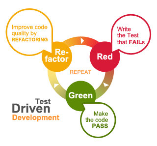

Development Processes
Goals:
- Minimize design and implementation errors
- Increase effectivness and code quality
- Simplify team workflow
General Software Development Lifecycle:
- Plan
- Create
- Verify /Test/
- Configure & Publish
- Monitor
- Automate
Theory of constraints
- Identify the system's constraints
- Decide how to exploit them
- Subordinate everything else to the above decisions
- Re-elevate the system's constraints
Theory of constraints
Types of constraints
- Equipment: misuse and under/over -utilization
- People: lack of skills, bad mental models
- Policy: explicit and implicit blockers
Programming styles
- Imperative: C, Pascal, Basic
- Declarative: SQL, HTML, CSS
- Object Oriented: Java, C#
- Functional: Clojure, Haskell, F#
- Mixed: JavaScript, Scala
Your programmin style is independant
from your development methodology
Common Development Methodologies:
- Design driven (Waterfall)
- Domain driven (DDD)
- Prototype driven
- Test driven (TDD)
Design driven (Waterfall)

Design driven (Waterfall)
- Based on the civil engineering disciplines
- Splits design from implementation
- Final requirments agreed at the start of the project
- Slow reaction to errors
Domain driven
Domain driven
- Mimics the domain and domain logic
- Design based on a model of the domain
- Collaboration between technical and domain experts
- Change is driven by the domain
Prototype driven
Prototype driven
- Throw away code
- Try to solve core problems first
- Release the product as soon as possible
- Requirments are re-examined after each release
Test driven
Test driven
- Write tests before product code
- Quickly uncover edge-cases, bugs and pitfalls
- Refactor and integrate with confidence
Test Driven Workflow
- Write a failing test
- Right just enough code to make the test pass
- Refactor the code without breaking the test
- Repeat
Pair programming
- Group works as a unit
- One team member write the code
- The other(s) observe, learn and suggest improvments
- Another team member starts to write the code
Technical discussions
- During planning / when needed
- Several or all team members should:
- Analyze the problem in question
- Reach a working solution
- Write a report / documentation
- Create implementation cards
Research spike
- Select the best technology for a task
- Discover the best agorithm for a task
- Answer a question or gathering information rather than at producing shippable product.
Code reviews
- Upon request / when code is done
- One or several team members should:
- study and test the new code
- write down issues / comments related to the code
- suggest improvements
- mark the code as ready
Links:
Course Schedule:
| week 1 03.02.2017 | History of the web | Fullstack Principles | Development Processes | Agile Processes | DevOps Basics | Git |
| week 2 10.02.2017 | Frontend Overview | Backend Overview | Network Overview | Testing | JavaScript Overview | JavaScript Tooling |
| week 3 17.02.2017 | Web Architectures | RESTful principles | SOLID principles | Web Components | Continuous Integration | |
| week 4 24.02.2017 | Databases basics | Using APIs | Deployment Automation | Monitoring | In-class project consultations | |
| week 5 17.03.2017 |
Project presentations Final Test Course Retrospective and Q&A |
|||||